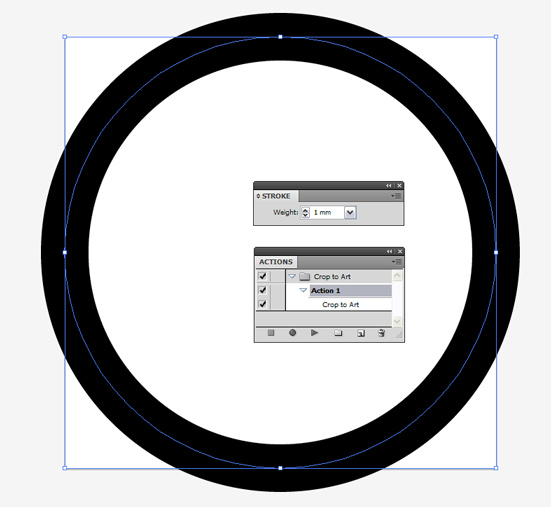

Размер Artboard по размеру выделенного
Sancho / 01.10.2010, 17:09/00:41
Форум:
Собственно что тут объяснять то :) Всё в заголовке.
app.activeDocument.cropBox = app.activeDocument.visibleBounds;
var z, v = app.activeDocument.activeView;
z = v.zoom; v.zoom *= 1.01; v.zoom = z;
Сохраняем код в текстовый файл и переименовываем его как Crop to Art.jsx
© Copyright by wOxxOm
Запрещается копирование и публикация материала на других сайтах без письменного согласия автора.
No part of this story can be copied/pasted on any other website without the author's express written permission.

кстати, если кто не знал - можно также использовать и встроенный Artboard tool (Shift-O), хотя лично мне в 99% случаев удобнее скриптом.
открывает док
выделяет всё, создает новый док, с размер артбоарда = размеру выделенного
копирует выделенное в новый док
закрывает старый док
сохраняет новый док по тому же пути с тем же именем в формате .ai
закрывает новый док
ЗЫ. Может можно и проще, но дареному коню в зубы не смотрят гыгыгы...
ЗЫЫ. Адобовцы - мосговыносители. Если в CS6 снова поменяют объектную модель, то пусть сами скрипты и пишут. :D
ЗЫЫЫ. Санчосо, я правильно догоняю, что последние две строки твоего скрипта не особо актуальны, а точнее только для наглядности? Ну, извини, некогда читать эти мануалы. =) Голова бобо :D =)) Ой! это же скрипт wOxxOm`a! =) (Эх... бабка-то совсем слепа =) ) Многоуважаемый WOxxOm, тогда вопрос переадресуется к тебе.
Спасибо теперь работает как нужно.
Кстати,скрипты можно запускать через Асtion,правда с перезапуском программы
Асtion слетает, но если нужно многократное применение скрипта в течении дня,то игра стоит свеч.
Хотя лично я себе замутил хук в системе (XP SP3) и сделал горячие кнопочки. Работает. Но понятное дело, это тупо костыл, ибо SDK некогда постигать, а жаль.
Проблема в следующем, этот способ отлично работает для объектов и групп, но вот в случае когда иллюстрация находиться под clipping mask, артбоард вместо того чтобы принять ее размеры, принимает размеры ее содержимого. To есть вокруг иллюстрации возникает пустая рамка до краев арбоард-а, равная тому насколько замаскированый объект выступает из clipping mask. Нет ли метода разрешения этой проблемы. Нужно чтоб скрипт действовал аналогично функции Artboard>"Fit to Artwork Bounds". P.S. Illustrator CS6
Страницы